Пять задач по странице «Диспетчеры», поиск в модерации, доработка «Рейсов» и ускорение длинных списков. Всё проверено вживую в браузере на staging-API, а не только тестами.
| Место | Что изменилось |
|---|---|
| Админка · Диспетчеры | Колонка «Телефон / email» показывает оба контакта (или только email — таких менеджеров раньше не было видно). Три новые колонки: Регистрация, Обновлено, Был онлайн. Кнопка «Просмотр» открывает карточку как у водителя — с фото и всеми данными. Роли: Driver manager — зелёный, Cargo manager — синий. |
| Админка · Модерация | На вкладках «Водители», «Менеджеры», «Паспорт», «Компании» появилось поле поиска — одно поле ищет и по имени, и по телефону (и по email / ИНН, где они есть). |
| Админка · Журнал модерации | Появился видимый поиск: по названию объекта и по модератору. |
| Админка · Рейсы | Колонка «Обновлено». Карточка рейса переписана: хронология из 9 отметок, раскодированные данные транспорта, читаемая цена. |
| Длинные списки | Журнал модерации и другие большие таблицы показывают первые строки сразу (≈1,9 с) и молча дозагружают остальное — раньше экран ждал загрузки всех страниц целиком. |
| № | Задача | Как сделано |
|---|---|---|
| 1 | Колонка «Телефон» → «Телефон / email» | Показывает телефон, email или оба — как на странице водителей. Поиск теперь тоже покрывает email (раньше email-менеджера нельзя было найти). На staging: 2 строки из 36 с обоими контактами, 4 — только email. |
| 2 | Три колонки дат в конце | created_at, updated_at, last_online_at — перед «Действиями». |
| 3 | Вид карточки как у водителя | Новый компонент AdminDispatcherDetailDrawer с той же вёрсткой секций и темизацией. |
| 4 | Все данные из запроса + фото | Отрисованы все 24 поля ответа. Фото — через новый хук useAdminDispatcherPhoto. |
| 5 | Цвета ролей | Driver manager — зелёный, Cargo manager — синий. |
Про фото у водителя. В запросе было «в карточке водителя фото не подключено — подключить». Проверка показала, что оно уже подключено и работает: просто у 5 водителей из 50 на staging есть фото (has_photo=true), у остальных его нет — поэтому и казалось, что не работает. Ничего чинить не потребовалось; для диспетчеров сделан такой же хук.
Одно поле на очередь, ищет сразу по нескольким полям. Вынесены общий компонент AdminSearchInput и чистая функция filterAdminRowsBySearch (покрыта 9 тестами) — вместо пятой копии одного и того же кода.
| Экран | По каким полям ищет |
|---|---|
| Модерация · водители | имя + телефон + email |
| Модерация · менеджеры | имя + телефон + email |
| Модерация · паспорт | имя + телефон (email в этих строках не приходит) |
| Модерация · компании | название + телефон + ИНН |
| Журнал модерации | название объекта + модератор + id (телефона в строке журнала нет) |
| Что | Детали |
|---|---|
| Колонка «Обновлено» | UpdatedAt перед «Действиями» (у рейсов поля приходят в PascalCase — это особенность именно этого эндпоинта). |
| Полная карточка | Секции: Рейс · Хронология · Транспорт · Назначение · Системная информация. |
| Данные транспорта | VehicleSnapshot — base64-JSON; раскодирован, типы платформ через справочник («Truck», «Flatbed»). |
| Цена | Через общий formatPrice — разделитель разрядов по активному языку. |
Раньше таблица ждала, пока прогрузятся все страницы, и до этого не показывала ничего — отсюда ощущение, что журнал модерации «висит». Теперь первая страница публикуется сразу, остальные дописываются по мере прихода, спиннер таблицу не блокирует. Обновление по кнопке по-прежнему применяется одним разом — иначе таблица на глазах схлопывалась бы до 100 строк и разрасталась заново.
| Измерено вживую | Результат |
|---|---|
| Первые строки журнала | ≈1,9 с (при искусственном замедлении сети), блокирующего спиннера нет |
| Догрузка | список продолжает расти после первой отрисовки (6 → 8 страниц) и молча становится полным |
| Защита от «половины списка» | прерванная загрузка помечается как неполная и возобновляется — неполный список не может быть показан как полный |
После реализации прогнан код-ревью по своему же диффу. Найденное чинилось до сдачи:
| № | Проблема | Исправление |
|---|---|---|
| 1–2 | Цена рейса форматировалась с жёстко зашитой русской локалью и дублировала уже существующий formatPrice | Переведено на общий formatPrice. Проверено: en — $12,222, ru — $12 222 |
| 3 | Поиск сужал опции колоночных фильтров — можно было «застрять» с применённым фильтром, галочку которого уже не видно | Фильтры снова строятся по всей очереди, а не по найденному подмножеству |
| 4 | Возобновлённая загрузка не показывала прогресс и молча выдавала неполный список за полный | Стриминг включается, пока нет полного набора, а не только на первой загрузке |
| 5 | Возобновление игнорировало флаг «запрос выключен» — могло фоном тянуть весь список без нужды | Добавлена проверка |
| 6 | Открытая карточка теряла подставленные данные, если поиск исключал её строку | Строка ищется по всей очереди |
| Проверка | Результат |
|---|---|
| Типы (tsc -b --force) | чисто |
| Линтер (eslint . --max-warnings 0) | чисто |
| Тесты (vitest run) | 1311 / 1311 в 144 файлах (+9 новых на поиск) |
| Локали | 15 / 15 — все новые ключи заведены во все языки |
Честное замечание. В одном из прогонов два теста рендера упали по таймауту. Причина — не код: параллельно работали dev-сервер и браузер Playwright и забирали процессор. По отдельности тесты проходят за 0,5 с при лимите 5 с, на свободной машине весь набор зелёный. Это хрупкость самих тестов, а не регресс.
| Что проверено в браузере | Результат |
|---|---|
| Колонки диспетчеров | №, Имя, Телефон / email, Роль, Статус, Модерация, Рейтинг, Грузы/офферы/рейсы, Регистрация, Обновлено, Был онлайн, Действия |
| Стек «телефон + email» | 2 строки из 36 с обоими, 4 — только email |
| Цвета ролей | Driver manager — ant-tag-green, Cargo manager — ant-tag-blue |
| Фото в карточке | реальный снимок загружен (358×347) |
| Полнота карточки | полей в модалке без ответа: [] · полей ответа без модалки: [] |
| Статус «Pending» | «Pending» / «На рассмотрении» вместо сырого pending |
| Поиск в журнале | по имени — 4 из 50 строк, по модератору — 50 |
| Поиск на всех вкладках модерации | работает; опции колоночных фильтров не схлопываются |
| Ошибки в консоли | нет |
Все снимки сделаны в реальном браузере на реальных данных staging — не макеты.
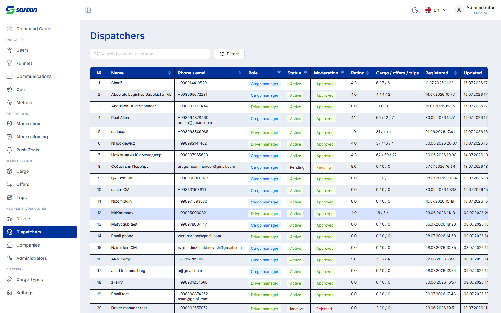
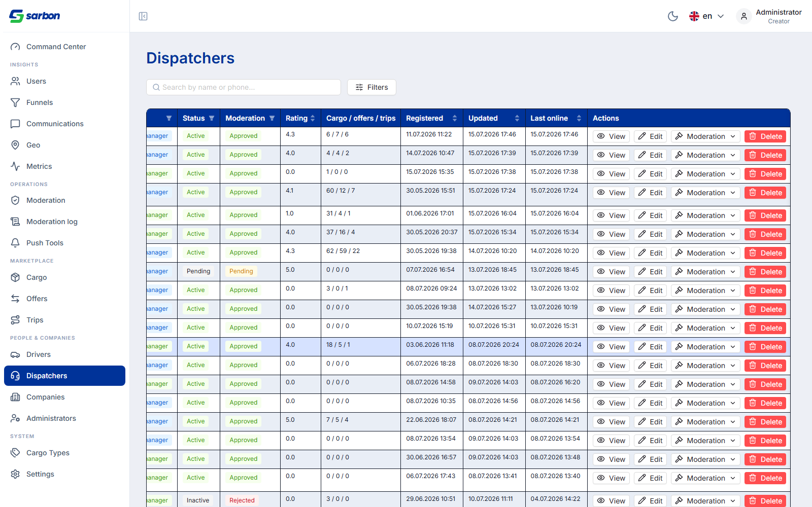
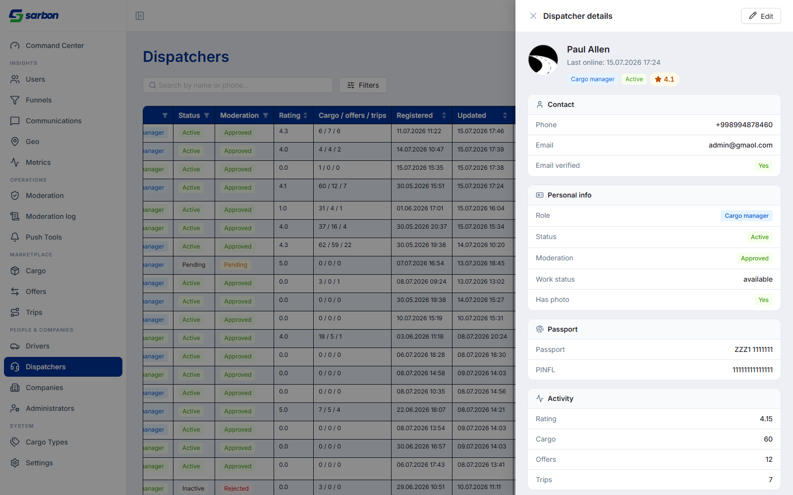
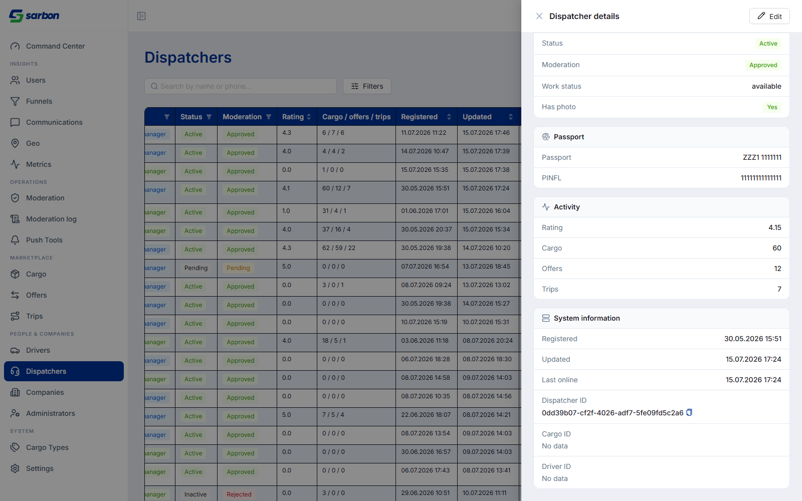
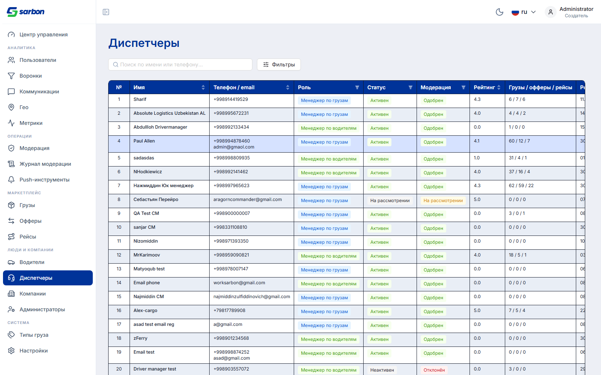
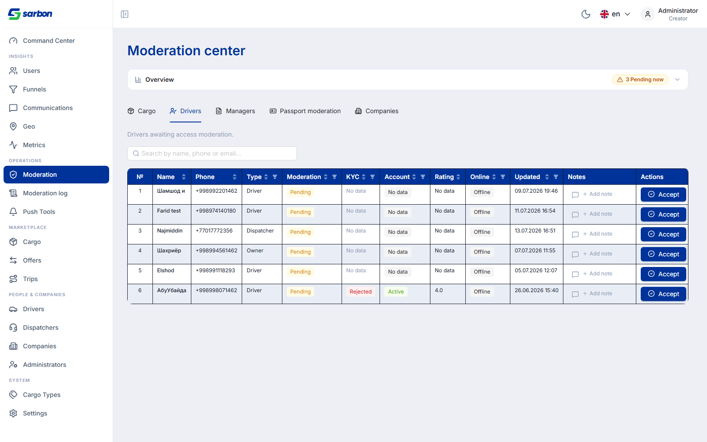
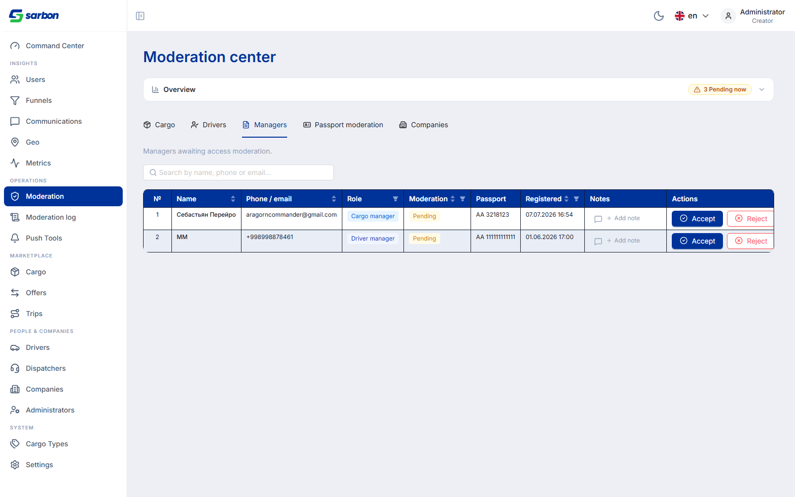
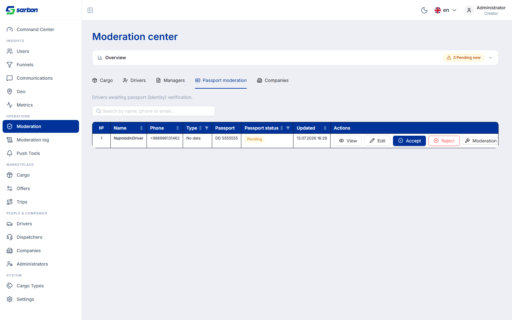
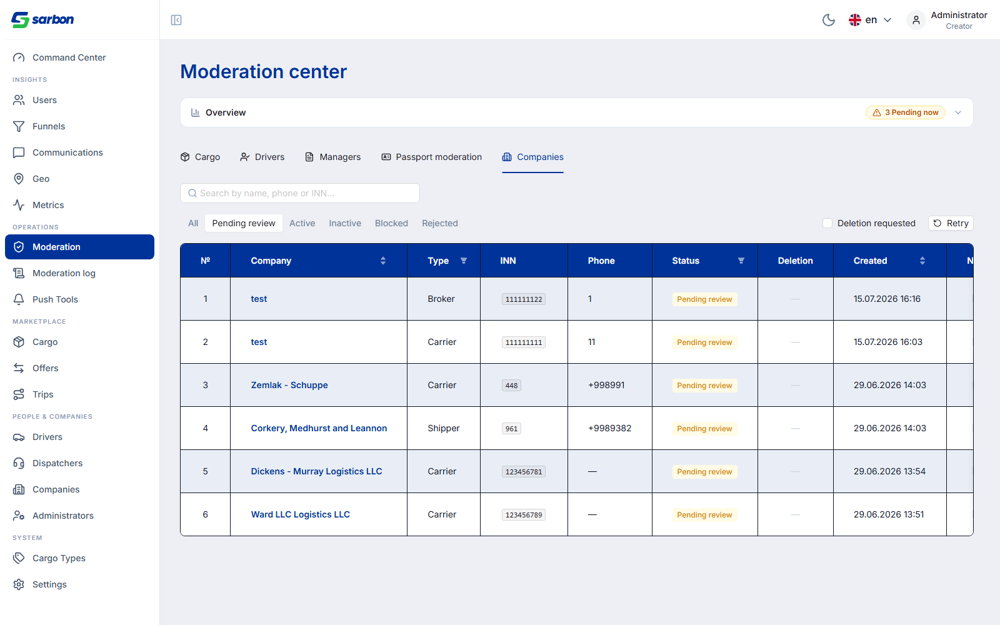
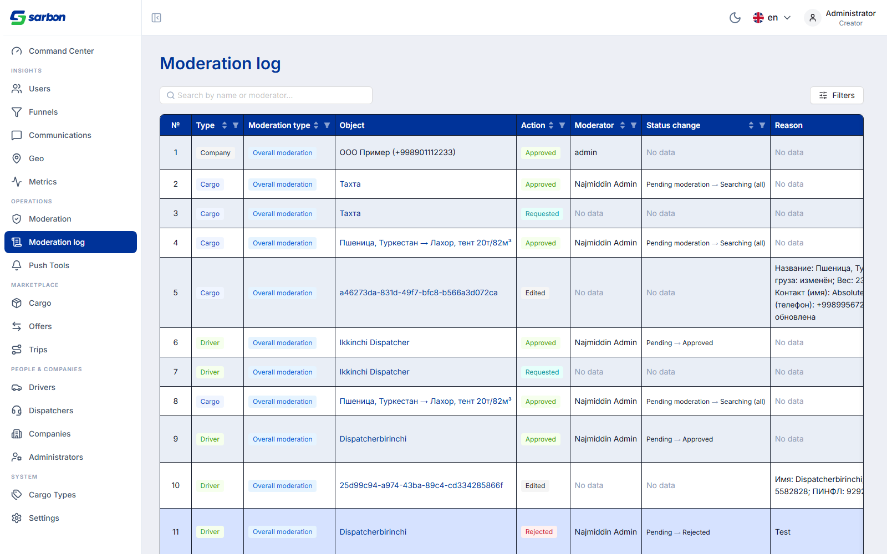
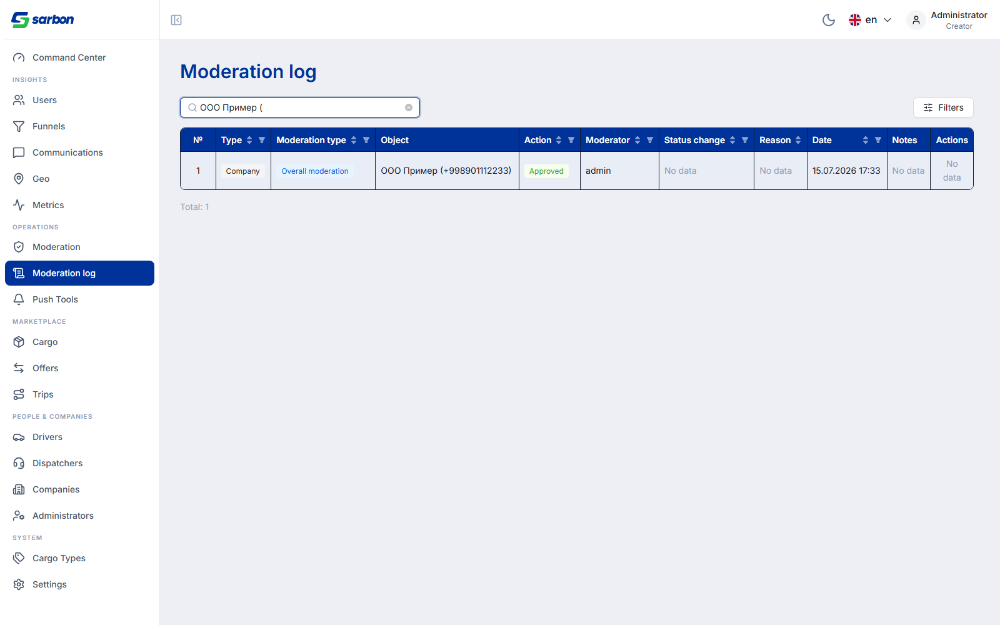
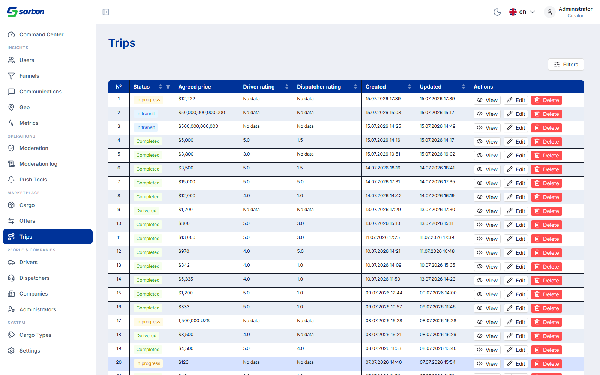
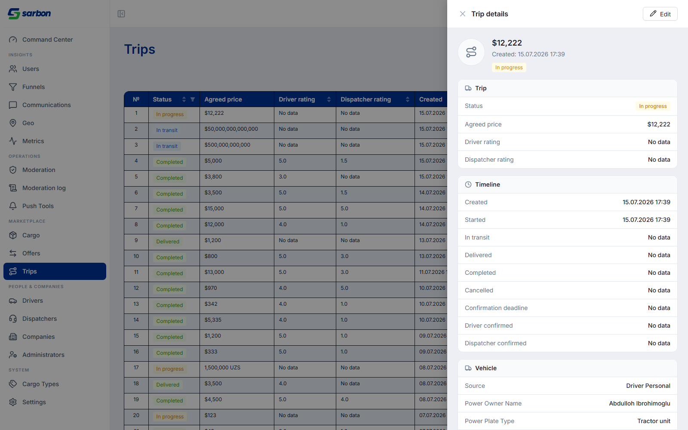
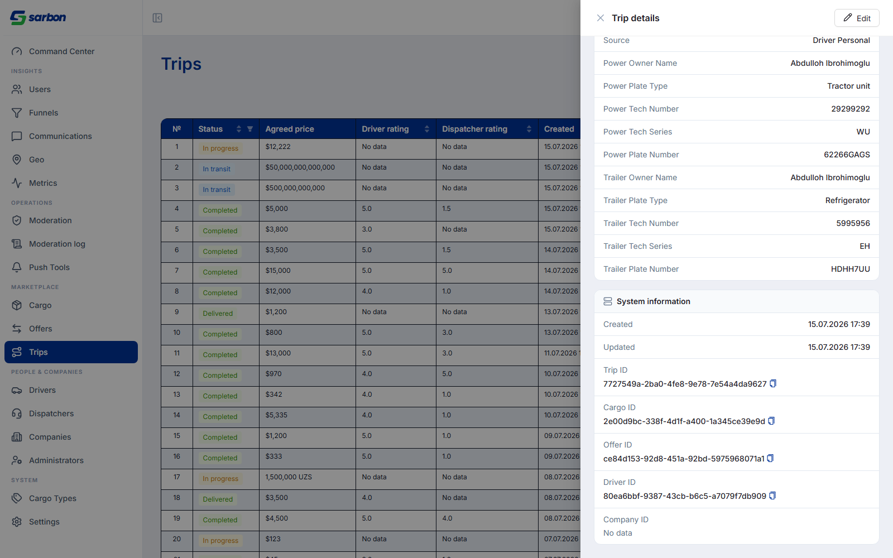
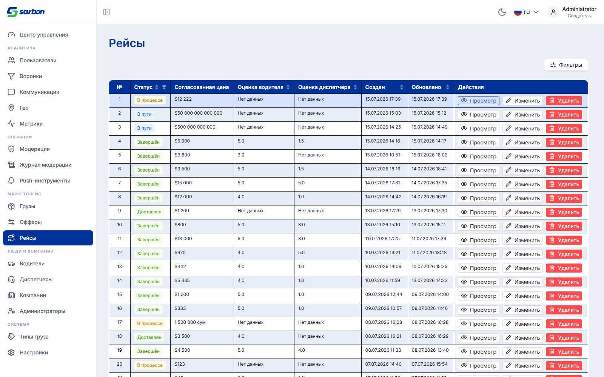
При сверке git-диффа дня с отчётом обнаружены изменённые области, которые не были задокументированы. Добавлены ниже (текстовая доработка отчёта, без скриншотов).
Полный дифф дня — 71 файлов.
| Область | Значимость | Файлы / коммит |
|---|---|---|
| Company: разрешение активной компании (useActiveCompany + companyActive.ts) — фикс «activeCompany null на логине» | КРУПНОЕ | useActiveCompany.ts, companyActive.ts (+test) — коммит 4b59d6ee |
| Company: права (useCompanyPermissions + companyPermissions.ts, /v1/me/permissions), метки ролей (companyRole.ts) | КРУПНОЕ | useCompanyPermissions.ts, companyPermissions.ts, companyRole.ts (+тесты) |
| Company: смена компании + кросс-таб синхронизация сессии (useCompanySwitch, useCompanyContextSync, companySwitch.ts, companySessionCache.ts) | КРУПНОЕ | CompanyLayout.tsx + 4 утилиты/хука (+test) |
| Company: переработка профиля (personal/account, companyProfile.ts, CompanyProfileSidebar) + гейтинг фетча на CompanyDetailPage | КРУПНОЕ | CompanyProfilePage.tsx, companyProfile.ts, CompanyDetailPage.tsx |
| Admin: переписан drawer деталей водителя + контактный дисплей (AdminDriverDetailDrawer new 377, driverContact.ts) | КРУПНОЕ | AdminDriverDetailDrawer.tsx, AdminDriversPage.tsx (-249), driverContact.ts (+test) |
| Company: фикс регистрации/логина (пароль-логин, детект dispatcher-конфликта, complete/register) | КРУПНОЕ | companyPassword.ts, companyRegisterConflict.ts, CompanyCompletePage/RegisterPage — коммит 471ad5f6 |